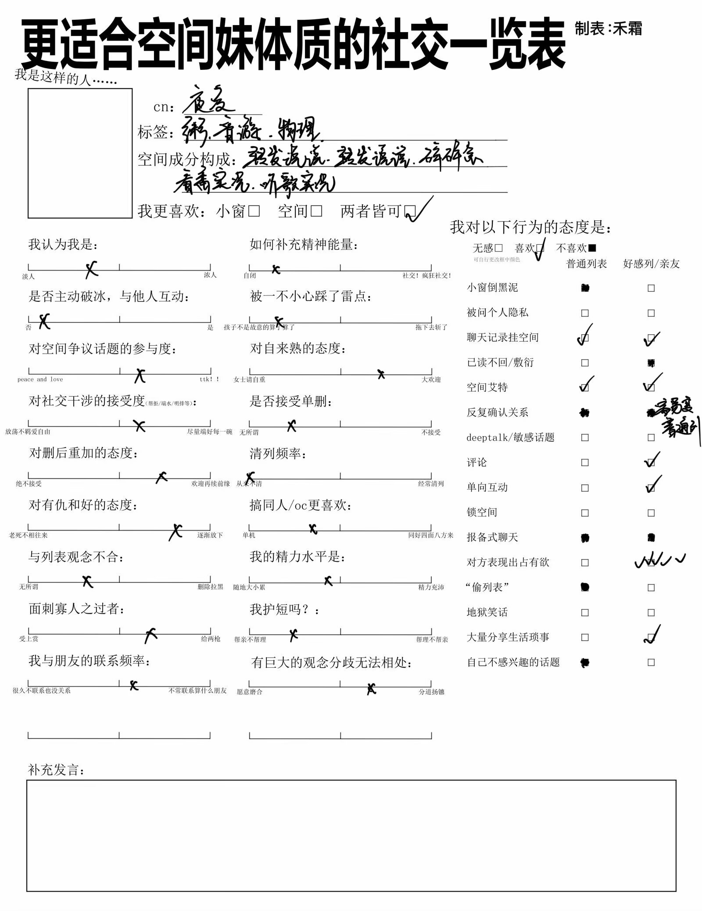

夜凌 Ryelin
我叫夜凌! 很高兴有缘见到你，如果你是我的同好并且与我扩列我会很高兴，如果你还是和我类似的控油我会更高兴(?)
无论如何都要感谢您冒着点击陌生网页链接的风险(?)来到了我的主页!
请与我扩列...! 2023395644@qq.com
一些特质
- 我很能发空间和转发说说，现在空间有 8.7 万，可以看个爽(?)
- 空间内容很多的代价就是有很多故障，比如一直在被禁赞，比如非好友无法访问我的空间……所以显得我好像完全不给控油们点赞))
- 我很不喜欢“秒赞”这种工具，我不会使用这种工具，也不接受我的列表使用) 这是我唯一的雷点
- 或许可以宣称我是“同人女”
- 但考虑到我实际上的性别，或许应该称之为“同人男”(?) 又考虑到实际上我已经不再具备同人产出的能力，只是会关注同人作品，或许应该加个前缀为“广义同人男”(?)
- 但确实不太能感受到“同人女”的气质，因为我更倾向“接受式阅读”，所以嗑 cp 一般都是官推 / 官配，而且一般是 bg，这导致我看上去更像是典型的宅男哥(。。)

成分与属性（假装很严肃地都使用了全称(?)）
成分最高的
- 明日方舟
- 倒不是开服玩家，21 年 6 月 11 日入坑，但在这个坑里建构起了我目前最主要的人际关系网络，若干年内无法割舍
- BanG Dream
- 从 MyGO 入坑，然后补完了番剧，也一起和大家伙疯狂星期四过) 上面那位负责带我体验宏大叙事，而这位则带我体会人际往来的微观课题(?)
- 大多数时候作为团推（或许吧?）出现，不太嗑产品
- 舞萌 DX
- 一般用来饭后消食儿(?) 顺便听听歌
其实也看过的 IP
- Arcaea
- 对立猫形象深入人心.jpg
- 全职高手
- 如果有一阵子低沉了就再刷一遍，于是现在可能十一二三四五刷了(
- Steins Gate
- 受本科时候一个朋友的影响入坑，差点儿改变了我现生的研究领域)
- Harry Potter
- 也是时不时再刷一遍的，还是电影和原著轮着刷( 而且是少有的越看社区的分析发现里头东西越多的坑
- 葬送的芙莉莲
- 我还记得那是我大三那段最抑郁的时期，这部番某种意义上把我救起来了
- 罗小黑战记
- 有点儿不够年长所以没有参与从零开始追更(?) 但我很喜欢这个坑，无论是原作官方还是社区都让我觉得很舒适
- VOCALOID
- 小时候曾经向往过成为术曲的 STAFF，实际尝试了以后留下了黑历史然后我光速逃离了，现在已释怀)
- 三体
- 和 HP 一样越挖原作发现越有意思的作品
- Girls Band Cry
- 其实是和邦邦同期的时候想着顺带看一下的，然后
- 少女歌剧
- 抹布吸....(?)
- 推子
- 没办法，大赤老师虽然整了那么多烂活儿但不得不承认至少笔下俊男美女确实太漂亮了(?
- 败犬女主
- 在里头嗑猛了(?
- 暗杀教室
- 好像对我同龄人提到这部番的反应都是爷青回) 但我其实是去年才看的) 总是会因此想起我的高中老师们，然后不禁潸然
- 很嗑渚枫))
- 跑团
- 本科时被朋友带着跑过四次 coc 线下团（我应该没有搞错 coc 和 coj，但肯定不是 dnd，嗯...），很怀念，因为最近没人带我跑了)
- 喜人
- 我逛了一次北京 ga 展才发现原来这里也有广袤的同人社区(?
- ....
- 没有想到的大概可以称之为“隐属”（确信）